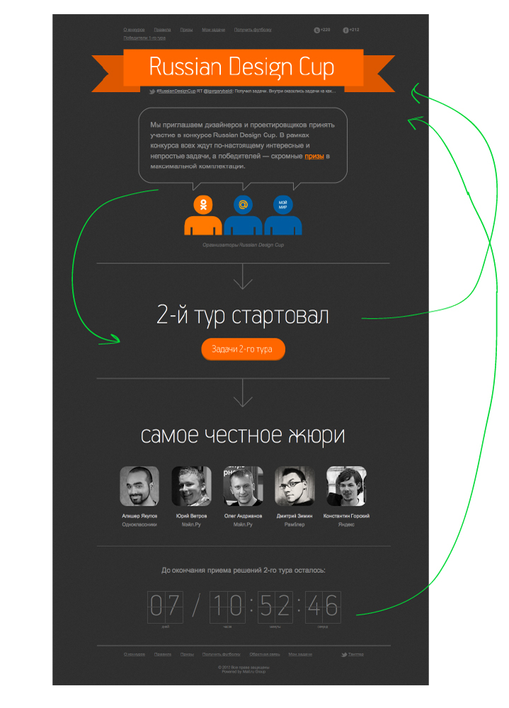
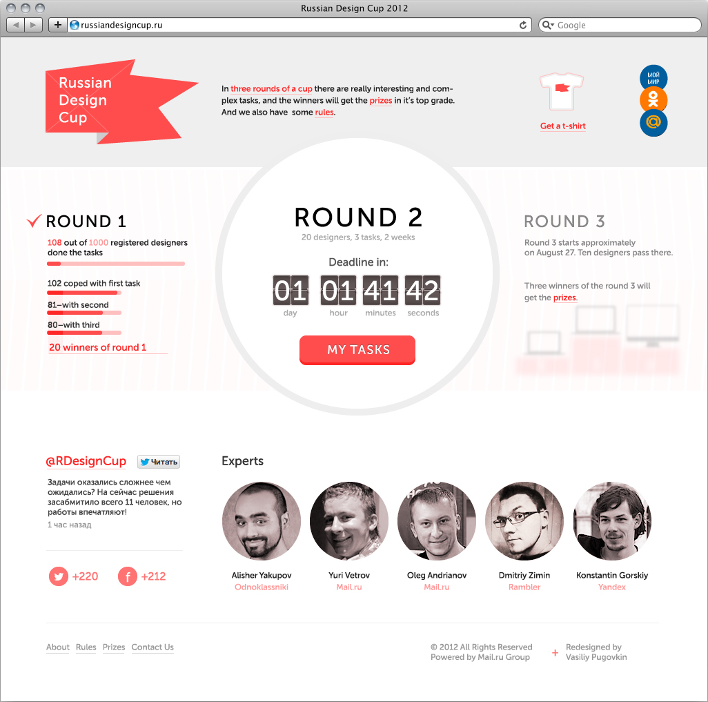

5th task of Russian Design Cup 2012
The original design. The main problem is in poor information finding for the competitors. And also layout for this type of sites should be more compact.
So my version is more compact, structured and light. Cup progress is more obvious.
